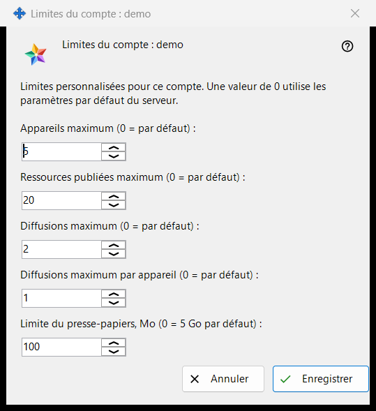
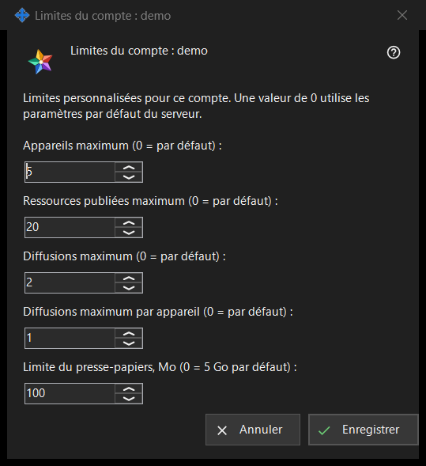

Limites du compte
Objectif
Définit des limites individuelles pour un compte du Media Exchange Server que vous exploitez ; une valeur laissée à 0 suit la valeur par défaut du serveur. La fenêtre s'ouvre depuis le bouton «Limites..» sous la liste des comptes de la page Media Exchange Server des paramètres de Share Manager, qui apparaît dès qu'un compte est sélectionné. Le titre nomme le compte : «Limites du compte : <login>».


Dans cet ordre
- Sélectionnez le compte et cliquez sur «Limites..».
- Saisissez un nombre pour chaque limite à modifier et laissez 0 pour la valeur par défaut du serveur.
- Cliquez sur «Enregistrer».
- Lisez la ligne de résultat : «Limites du compte <login> enregistrées.»
Les éléments
Appareils et ressources
«Appareils maximum (0 = par défaut) :» plafonne les appareils qui peuvent être connectés au compte. «Ressources publiées maximum (0 = par défaut) :» plafonne les dossiers partagés et autres ressources que le compte peut publier sur le serveur.
Diffusions
«Diffusions maximum (0 = par défaut) :» plafonne les diffusions de l'ensemble du compte, et «Diffusions maximum par appareil (0 = par défaut) :» plafonne ce qu'un seul appareil du compte peut lancer.
Limite du presse-papiers
«Limite du presse-papiers, Mo (0 = 5 Go par défaut) :» fixe la plus grande valeur que le compte peut envoyer vers son presse-papiers sur le serveur, en mégaoctets entiers. Une limite stockée dans des unités plus petites, par exemple 512 Ko, s'affiche comme 0 et garde sa taille exacte tant que vous ne touchez pas à ce champ.
Enregistrer et annuler
«Enregistrer» remplace d'un bloc les limites propres du compte : chaque nombre supérieur à 0 devient une limite, chaque 0 signifie la valeur par défaut du serveur, et cinq zéros suppriment les dérogations du compte. «Annuler» ne change rien. Si le serveur refuse une valeur, la ligne de résultat en donne la raison, par exemple «Limite non autorisée : il doit s'agir d'un entier dans la plage acceptée par le serveur.»
Paramètres du gestionnaire · Paramètres de partage SFTP · Paramètres du serveur d’échange